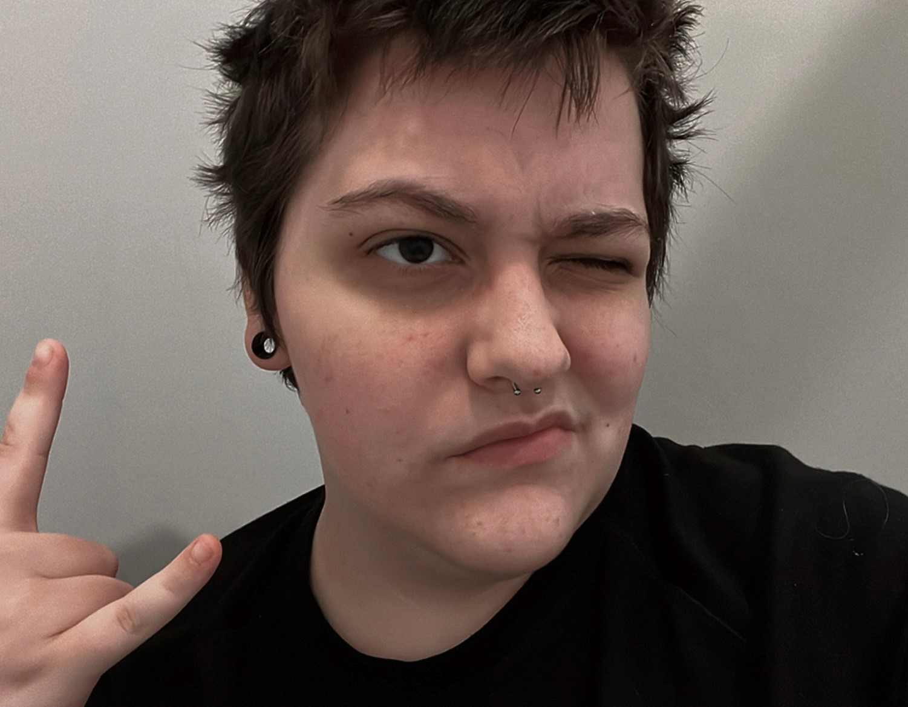

Welcome!
This is my about me page! Get to know me and what it is I do and want to do in the future! Below is a more updated version of this page as on 4/14/24 and will continue to update as I find the words to describle myself and my intrests.
My name is Alexander Schwartz, I'm a 21 year old CTK Major and I'm currently finishing my Junior year at Illinois State University. I major in Creative Technology: Interdisiplinary Technology- which pretty much means I get to study a bit of everything in ISU's Creative Tech program. This means That I dip my feet in music production, graphic design, website design, traditional art, and much more! I also have a Minor in Film studies as I have an intrest in the way films are preceived and created! I made this site not only as a project for one of my courses but as a portfolio to show off what i've created in my CTK (creative tech) classes. It's not only here to show off my skills to future employers but also a space to show off my personal projects i may create in the near future.
My intrests include creating audio stories, playing with my ESA cat Samwise- who was named after the lord of the rings Sawmwise, trying to learn filming techniques, midnight gaming, and many other things! I'm a big horror movie fan and I really enjoy consuming media that overexplains and theorizes about any kind of film. I hope one day I can make my own videos doing the same.